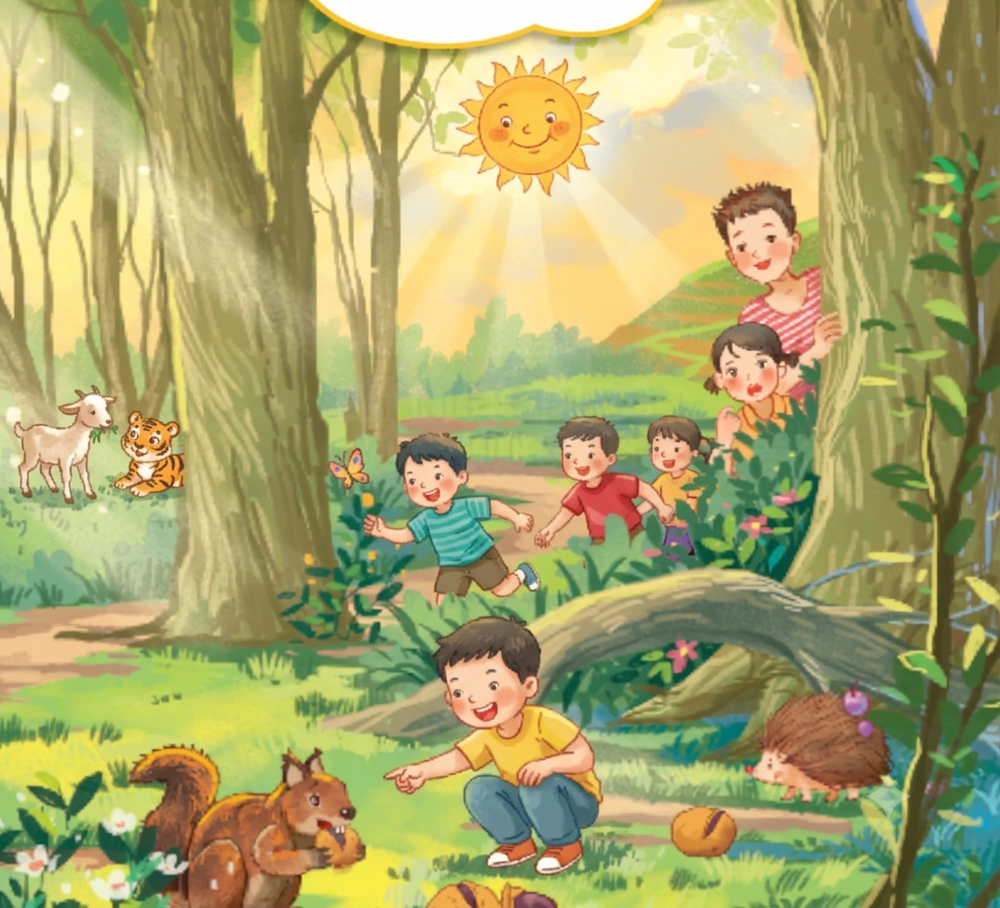
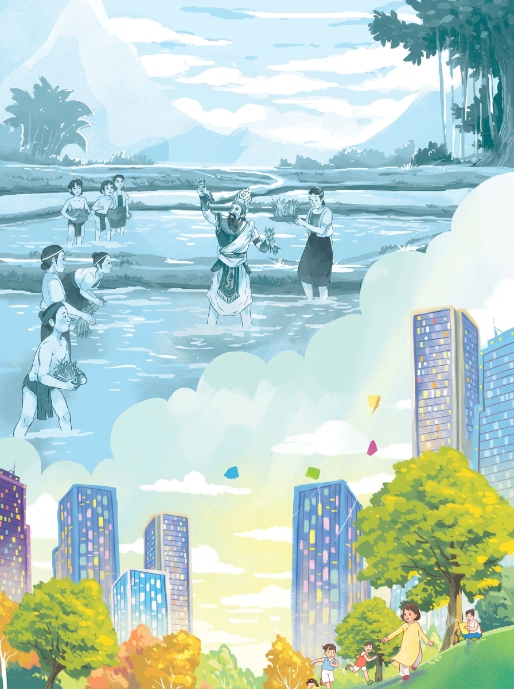

Tiếng Việt 5 – Kết nối tri thức với cuộc sống (CTGDPT 2018)
Cùng nhau phát triển năng lực ngôn ngữ

Chọn chủ đề đọc hiểu văn bản miêu tả
Bám sát SGK Tiếng Việt 5 – Kết nối tri thức với cuộc sống

Chủ đề: Vẻ đẹp cuộc sống
7 bài đọc tiêu biểu

Chủ đề: Tiếp bước cha ông ta
2 bài đọc tiêu biểu
Tên chủ đề
Bấm chọn bài đọc để luyện đọc, giải nghĩa từ & làm bài tập
BƯỚC 1: CHẠY BÀI ĐỌC KARAOKE, GIẢI NGHĨA TỪ & ĐÁNH GIÁ MỨC ĐỌC (T / H / C)
Tốc độ đọc (mặc định 0.45x để theo kịp):
Tiêu đề bài
💡 Giải nghĩa từ ngữ miêu tả trong văn bản (trước khi làm bài tập)
BƯỚC 2: CÂU HỎI ĐỌC HIỂU THEO BÀI HỌC
BƯỚC 3: TRẮC NGHIỆM ĐỌC HIỂU & PHÁT TRIỂN NGÔN NGỮ
BƯỚC 4: BÀI TẬP TƯ DUY NGÔN NGỮ (TRANG 1 / 4)
Trang 1 / 4